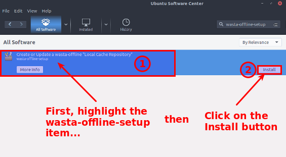

This document is an illustrated guide that shows how to use the wasta-offline-setup program to prepare a memory stick with software updates accumulated from one or more already updated Linux computers (the source machines). The memory stick can then be carried to a remote area (without good/inexpensive Internet access) and plugged into one or more Wasta computers (the target machines) to update their software from the updates on the memory stick – offline – rather than going out to the Internet for those updates. When the memory stick is plugged into a Wasta target computer, the wasta-offline program runs automatically to configure the computer to look for its updates from the memory stick. While wasta-offline is running and “Ready”, the user can then use standard software installing and updating programs (such as Software Updater, Synaptic Package Manager, or apt-get commands in a Terminal) to carry out the updating/installing process. The Ubuntu Software Center could also be used, but it won’t run unless Internet access is available at the time it is run – even though it would be used in this case just to install programs that were stored on the memory stick.
This document is designed to be a guide for an Advisor, Consultant or Technician who wishes to provide an offline way to update the software on any number of target Wasta computers that are similarly configured to one or more source Wasta computers – where the source computers have had more recent software installs or updates than the target computers.
It makes sense:
When updating a 1TB drive with a Full Wasta-Offline Mirror is not practical or cost effective
Where Internet access is not possible or too unreliable
Where the cost of Internet access is expensive – especially for data downloads where cost is calculated per-megabyte
Where more than one target Wasta computer needs to be updated so that they all stay in sync with the source Wasta computer(s) - configured with essentially the same software on them.
“How to obtain a Full Wasta-Offline Mirror residing on a 1TB USB hard drive”
“How to get software updates for a Full Wasta-Offline Mirror residing on a 1TB USB hard drive”
“How to update your Wasta-Linux software offline by memory stick or external hard drive”
If you have a fresh memory stick that has not been used previously for transferring wasta-offline software updates from a source computer to a target computer, or are getting software updates from a source computer that has not been used with wasta-offline-setup before, then you need to do one or both of these preliminary one-time procedures. The one-time procedures are:
Preliminary Procedure 1. Installing wasta-offline-setup on the “source” computer(s). Do this procedure if the source computer has never before been used as a source computer for wasta-offline-setup. The procedure shows how to install the wasta-offline-setup program on the computer. If there is more than one source computer, this procedure will need to be done one time on each of the source computers functioning as the source for offline software updates.
Preliminary Procedure 2. Preparing a fresh memory stick for use by wasta-offline-setup. Do this procedure if the memory stick being used to transfer software updates is a fresh one, that is, one that has not been used before by wasta-offline-setup for this purpose. A fresh memory stick will not have a folder named wasta-offline in its root directory.
The above one-time procedures are documented in a later section of this document. Click on the links and follow the appropriate procedure(s) if needed, then return here to proceed with Step 1 below to follow the typical memory stick update scenario.
If you previously prepared – or were given - a memory stick for installing wasta-offline updates, plug that memory stick into the “source” computer:
The source computer will normally be a Wasta computer and have the wasta-offline program installed on it along with wasta-offline-setup. Assuming the memory stick has been used previously for transferring software updates, it will have a wasta-offline folder in its root directory with (old) updates on it. The presence of a wasta-offline folder on the memory stick triggers the launch of the wasta-offline program about 10 seconds after it is plugged in. The first evidence you see that wasta-offline has launched is the request for a password for wasta [Offline]:
But, at this stage just Cancel this password prompt – we need to run wasta-offline-setup first instead of wasta-offline, since we haven’t yet gotten updates from this “source” computer.
With the memory stick plugged into the source computer, start up the wasta-offline-setup program from the Administration category of the main Menu:
If wasta [Offline] Setup is not listed on the Administration menu, skip down to the Preliminary Procedure 1. Installing wasta-offline-setup on the “source” computer(s), and install wasta-offline-setup on this source computer; then return here to continue the process of running wasta-offline-setup.
The wasta-offline-setup program asks for your administrative password:
The initial wasta-offline-setup message appears as shown in the illustration below:
Read the text in the message, then click on the Yes button to continue. The program causes the computer to look for a memory stick plugged in that has a wasta-offline folder on it, and when it finds one it presents you with the following dialog:
Note: In our typical scenario we previously used this memory stick, so it already had a wasta-offline folder in its root directory. The program automatically selected the KINGSTON memory stick device - since it found a wasta-offline folder on it - and it highlighted/selected the wasta-offline folder in blue.
Finally, click on the OK button. The program now processes the software package information:
The copying process goes fairly quickly with several progress messages similar to the above image. When wasta-offline-setup has finished the “Finished” dialog will appear:
When the process is finished you can view the log or just click No to finish up and close the dialog.
Repeat Step 1 and Step 2 above for any other source computer that you want to collect updates from. The wasta-offline-setup will combine the updates together on the memory stick for transferring to the target computer.
After removing the memory stick from the “source” computer(s), it is ready to plug into one or more target computers and transfer all the updates it received from the source computer(s).
Typically, the target computer(s) may be in a remote location where Internet is not available or is too expensive or unreliable to use for updating software.
About 10 seconds after plugging in the memory stick containing the latest software updates, the wasta [Offline] program should launch automatically and ask for your password:

This time you should go ahead and type in the password and click OK to continue – we know that this time the memory stick has been updated from one or more source computers – and we want wasta-offline to now update this target computer’s software.
After entering the password the first dialog you will see is the wasta [Offline] dialog shown below:

Click on the OK button to continue. After you click on the OK button, the wasta-offline program then does some work in the background for a short period of time (temporarily replacing the user's sources.list file with one that points to the external USB memory stick, rather than the remote Internet repositories, and then it inventories the updates that are available for your computer). The background work being done goes quickly. The following dialog is shown temporarily as progress indicator during the background process:
As soon as the background work is done the progress indicator automatically disappears and the following message is presented to the user:

At
this point we are ready to do a "normal" software update
procedure. Important: You must leave this wasta
[Offline] Ready dialog "open" and
unfinished as you go on to the next steps.
Wasta-offline has temporarily re-arranged the expected places to find updates on the memory stick or external hard drive, but if you click Finish too early, then the system reverts back to its original mode of looking for updates off the Internet instead.
Remember, the memory stick only contains software and updates to software that are being transferred from one or more existing “source” Wasta computer(s) to this target computer. It cannot be used to install new software or updates that were not already installed on the source Wasta computer(s).
There are many ways to update software in Wasta Linux, but here we will describe the tool called Software Updater which is one of the “normal” software tools to update software packages in the Ubuntu/Wasta Linux systems. Software Updater usually looks for updates on the Internet, but while wasta-offline is running (and the above “Ready” message is displaying), Software Updater is temporarily directed to get its updates from the memory stick that is plugged into the computer – instead of the Internet.
The Software Updater program can be started by clicking on an icon on your desktop as shown below:
Click on the Software Updater icon found on the lower right corner of the desktop. In the image above, the system is reporting that there are 16 updates available. That number will vary from update to update. It is the number of packages that would have been transferred over the Internet, if you had used the Internet to download the updates.
With wasta-offline still running (and the “Ready” message still open), select the Show updates option from the menu that appears in the software updater’s menu (Note: selecting the Install all updates menu item bypasses the next dialog).
The Software Updater will start up and show any updates that are available to install. The illustration shown below will vary for your computer depending on what updates are being transferred via the memory stick:
In the lower left part of the Software Updater dialog it says that “2.7 MB will be downloaded” for this particular software update. Occasionally, there may be many tens or hundreds of megabytes to “be downloaded”. Since we are using wasta-offline, the amount to be “downloaded” here will be done directly from the plugged-in memory stick rather than from the Internet. You can well imagine how using wasta-offline can improve the speed and eliminate the cost of such downloads, especially in areas where Internet is slow or expensive.
Click on the Install Now button to begin the software updates to your system. You may be asked to enter computer user's administrative password , if it has been more than 15 minutes since you started wasta-offline. The Software Updater first downloads the updates from the memory stick:
And
then it applies those updates in the same operation:

When the installation process is complete Software Updater will report that your computer is up to date:
When the user clicks on the OK button, the Update Manager automatically closes too, leaving the still-open wasta-offline message box the user saw at the beginning of the update process (and has been left open during the software updates):
If you know that a new Linux program was installed on the source computer recently, it should be possible to also install that new program on the target computer from the packages that are on the memory stick. To install the new software, you should use a different program called Synaptic Package Manager. The use of the Synaptic Package Manager is not described on this document. Please refer to the document entitled “How to update your Wasta-Linux software offline by memory stick or external hard drive” and follow the procedure described in the “Installing new software” section of that document.
The wasta-offline “Ready” message shown above should still be displaying on your desktop. You can now, click the Finish button to formally end the Wasta-Offline session and close the “Ready” message.
At this point the system has returned back to "normal" and will look for updates, as before, by using the Internet. If the system were somehow brought to a town and connected, then it would be ready to receive downloads and updates via the Internet.
Since you have just completed the update process, you can now "Safely Remove" the USB memory stick. Hover the mouse over the icons found on the lower right corner of the desktop as you look for the Removable drives icon:

Click
on the Removable drives icon
to display the pop up menu:
The USB memory stick we are demonstrating is named KINGSTON. In the illustration above it is the only device listed in the removable drives menu list (there may be other drives listed for your computer). Click on the up-pointing arrow icon shown above to safely remove the external drive containing the wasta-offline updates (mirror). The icon and pop up menu will disappear when it is safe to remove the USB device from the computer. You may also see a notification at the top of your screen that looks like this:

If you have multiple target computers running Wasta-Linux, you can do the same process on all of them without accessing the Internet from any of the target computers. You can follow the above process as often as there are new updates on memory stick.
For more detailed information on how to get the latest software updates loaded on the memory stick or external USB drive, see these documents:
“How to get software updates for a Full Wasta-Offline Mirror residing on a 1TB USB hard drive”
“How to get software updates from one Wasta computer and transfer them to another Wasta computer using wasta-offline-setup”
The following procedures describe one-time actions that you may need to do before you can follow the steps described above in the main documentation:
Do this procedure if the source computer has never before been used as a source computer for wasta-offline-setup. The procedure shows how to install the wasta-offline-setup program on the computer. If there is more than one source computer, this procedure will need to be done one time on each of the source computers functioning as the source for offline software updates.
Check to see if the program called wasta-offline-setup is already installed or not, on the computer that is to function as the “source” computer. The computer or computers we call the “source” computer is the computer that has more recently had software updates done to it. It is the computer you will be getting the updates from. The wasta-offline-setup program is not generally installed when Wasta Linux is first installed on a computer - it would be installed if the computer was previously used to prepare a memory stick for wasta-offline use.
Look at the list of programs in the Administration category of the main Menu (scroll down the list). If it only lists wasta [Offline], and not wasta [Offline] setup, as shown here:
then the first thing we need to do is to install wasta-offline-setup on the source machine. Skip down to the Install wasta-offline-setup section below.
If wasta [Offline] setup is already installed it should be listed in the Administration category of the Menu and will be located at this position in the list of Administration programs:
If wasta [Offline] setup is listed there under wasta [Offline], the program we need is already installed and you can skip down to the Run wasta-offline-setup section of this document.
If you do not see wasta [Offline] setup in the computer’s Administration programs list, you will need to install the wasta-offline-setup program from the Internet.
Fortunately, the wasta-offline-setup program is a relatively small download from the Internet – only about 10kb. If you have Internet access you can use the Ubuntu Software Center to download it and install it. (Note that the Ubuntu Software Center will not work if you do not have Internet access):
From the Main menu Select the Administration category, scroll down and select Ubuntu Software Center. The Ubuntu Software Center program will run and appear like this:
There is a search box in the upper right part of the Ubuntu Software Center. Type this:
wasta-offline-setup
into that search box. As you type you should see the possible applications narrow down to just one – the wasta-offline-setup program as shown in the illustration below:
Click on the Create or Update a wasta-offline “Locale Cache Repository” wasta-offline-setup item to highlight it:

Then click on the Install button to start installing the wasta-offline-setup program on your computer.
The program will ask you to enter your administrative password:
Enter the user’s administrative password and the press the Authenticate button. The password is required any time you install or update software in Wasta. The installation should happen quickly, and then you should see:
Note the green check mark now next to the wasta-offline-setup item. Also note that if you wanted to remove the wasta-offline-setup program (or other installed software) after it is installed, you could search for the program by name in the search box and remove it using the Remove button in the Ubuntu Software Center.
After you have installed wasta-offline-setup with this method it will not need to be installed again, but will be available for transferring the software updates from this “source” computer to other “target” computers without having to access the Internet for updating those other computers.
If you do not need to follow Preliminary Procedure 2 below you can click on this link to go back up and follow the main steps for using wasta-offline-setup above.
If this is the first use of this memory stick, it won’t have any wasta-offline folder on it. This preliminary procedure will describe two different methods for creating a wasta-offline folder:
Create a wasta-offline folder on a memory stick using the File Manager
Create a wasta-offline folder on a memory stick from within wasta-offline-setup
This method might be used before wasta-offline is installed on any computer, using the File Manager.
Plug in the fresh memory stick into the USB port of the computer.
Start up the File Manager by clicking once on the Files icon in the task bar as shown below:

The File Manager runs and appears on screen similar to the illustration below:
The memory stick shows up as a USB device under the Devices list in the left panel. The little round symbol with the up arrow over a bar indicates that the device is mounted in the file system and its contents can be accessed.
Click on the KINGSTON name in the device list to highlight it. The screen changes to look like the illustration shown below:

With the KINGSTON device highlighted, hover your mouse over the icons in the upper right part of the File Manager’s tool bar, until you see the “Create a new folder” tip below the icon that is shown in the red square in the above illustration. Click on that “Create a new folder” icon and “type-and-replace” the ‘Untitled Folder’ name with a different name: wasta-offline and press the Enter key when done. The new folder will appear in the File Manager:
The memory stick now has a wasta-offline folder created on it, and it can be plugged into the desired “source” computer.
If you used the above procedure to create the wasta-offline folder on the memory stick, you have come to the end of the Preliminary Procedure 2. You can now go back up to the main wasta-offline-setup steps – Running wasta-offline-setup on the source computer. The section below shows an alternate way to create a wasta-offline folder – from within the wasta-offline-setup program itself.
This method might be used if wasta-offline-setup is already installed on a source computer and you have started it before realizing that your memory stick doesn’t have a wasta-offline folder on it.
Plug in the fresh memory stick into the USB port of the source computer.
Then start up wasta-offline-setup from the Administrator category of the main Menu:
It prompts you for a password:
Enter the password and click OK. The wasta-offline-setup program then presents the following information and confirmation message:
Click the Yes button to continue.
The program then runs and scans the computer’s USB devices for a device that has a wasta-offline folder in its root directory. If it doesn’t find such a folder, it will prompt you to “Select or Create a ‘wasta-offline’ Folder as shown in this dialog:
In the above illustration, the name of my memory stick is “KINGSTON”. It is listed in the left panel of the dialog but the program doesn’t yet know that I want to use it (currently there is no wasta-offline folder in its root directory). So, you would click on the name KINGSTON to select it as shown below:
Once you have selected your memory stick (it will likely have its own name), you will need to click on the icon in the upper right corner of the dialog shown below to create a folder on the memory stick:
Type the name
wasta-offline
in the edit box as shown below:
and then click on the Create button. Once the wasta-offline folder has been created on the memory stick, the dialog will appear like the one below:
At this point, if the memory stick is plugged into a “source” computer from which you want to collect software updates, you can proceed with the wasta-offline-setup process and click OK. Otherwise, you can click Cancel since the memory stick now has a wasta-offline folder created on it, and it can be plugged into the desired “source” computer.
If you used the above procedure to create the wasta-offline folder on the memory stick, you have come to the end of the Preliminary Procedure 2. You can now go back up to the main wasta-offline-setup steps – Running wasta-offline-setup on the source computer.
Transferring
software updates offline via memory stick